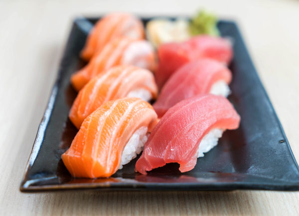
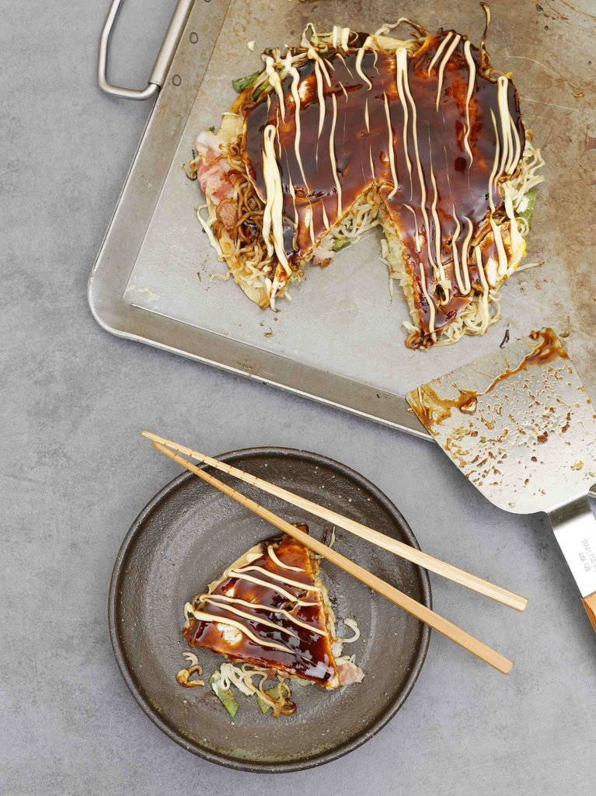
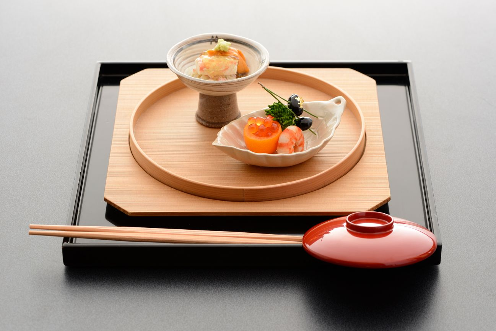
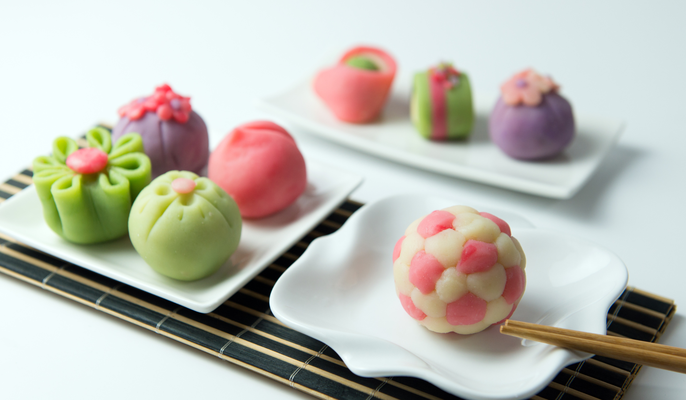
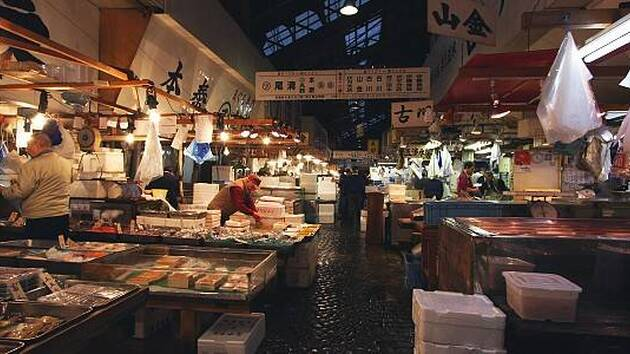
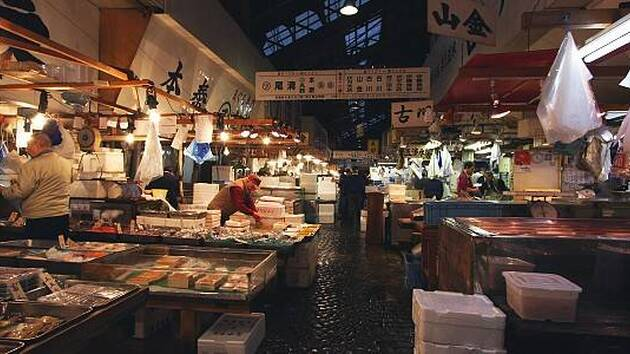

<=Pour voir notre selection
<=Pour voir notre selectionPour voir les conseils de nos spécialistes =>
<=Pour voir notre selectionExplorez les trésors culturels et naturels du Japon, une destination où l'ancien danse avec le moderne, créant une symphonie d'expériences inoubliables. Plongez dans l'histoire à travers des lieux emblématiques tels que le Pavillon d'Or de Kyoto, un éclat doré dans un jardin zen séculaire, ou le Mémorial de la Paix à Hiroshima, témoignage poignant de la résilience humaine.
Mais le Japon n'est pas seulement un voyage dans le temps ; c'est une aventure gastronomique en soi. Goûtez la perfection des sushis et des ramens dans les ruelles animées de Tokyo, découvrez la délicate symphonie du kaiseki, une expérience culinaire d'exception, et laissez-vous tenter par les saveurs croustillantes du tempura à Osaka. Chaque plat raconte une histoire, chaque bouchée est une immersion dans la culture japonaise.
Au-delà des délices culinaires, le Japon offre un panorama spectaculaire. Contemplez la majesté du Mont Fuji reflété sur les eaux tranquilles des Cinq Lacs, sillonnez les rues éclairées de néons de Tokyo, et découvrez la quiétude des temples nichés dans les montagnes de Nikko. Chaque coin du Japon dévoile une nouvelle facette, une nouvelle émotion, une nouvelle perspective.
Embarquez pour une aventure où la tradition et l'innovation se rencontrent, où chaque pas est une découverte, chaque repas est une célébration, et chaque paysage est une œuvre d'art. Le Japon vous attend, prêt à vous ensorceler avec sa magie intemporelle et sa beauté sans égale.**.
Bienvenue dans le royaume culinaire du Japon, où chaque repas est une danse exquise entre tradition et innovation. Découvrez l'art du sushi, où la délicatesse des saveurs marines fusionne avec la précision artistique du chef. Les ramens, steaming bowls de réconfort, vous emportent dans une aventure gustative à travers les ruelles animées.
Dans les rues d'Osaka, laissez-vous tenter par l'okonomiyaki, une danse de saveurs sur une plaque chaude. Les brochettes grillées, yakitori, révèlent le mariage parfait entre le feu et la viande, tandis que le tempura apporte une légèreté croustillante à chaque bouchée.
Osez l'expérience gastronomique raffinée du kaiseki, un tableau de plats artistiquement préparés, révélant l'essence des saisons japonaises. Pour les amateurs de viande d'exception, le Kobe beef offre une symphonie de tendreté et de saveurs dans chaque bouchée succulente.
Enfin, terminez votre périple culinaire par une note sucrée avec les wagashi, des joyaux de pâtisserie japonaise, et plongez dans la cérémonie du thé, une expérience méditative qui résume l'élégance et la simplicité japonaises.
Bien plus qu'une aventure culinaire, le Japon vous invite à danser avec vos papilles, à explorer les nuances de sa cuisine et à découvrir l'essence même de son âme à travers chaque plat délicatement préparé. Préparez-vous à embarquer pour un voyage où chaque repas est une expérience sensorielle à part entière.
 
